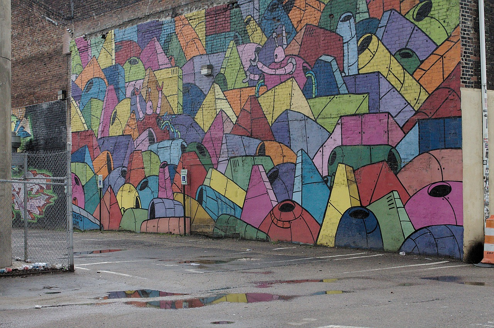

Hi! I'm Kate. I'm a graduate student in the Merrill College of Journalism at the University of Maryland. I'm also currently a communications graduate assistant for UMD's School of Public Health. I'm particularly passionate about radio journalism, but I also love (and have experience with) newspaper and magazine writing. Here are some samples of my work. Feel free to drop me a line!
I write and edit news stories about School of Public Health student and faculty research and accomplishments. I also produce and update content for the SPH website, as well as planning and posting social media campaigns and content.
At the University of Mary Washington’s student newspaper, I led an eleven-person editorial staff in editing and publishing approximately 20 articles per week in print and online. I represented The Blue and Gray Press at meetings with the school’s administration and UMW Finance Committee, working to promote student journalism on and off campus.
In this role, I researched and pitched news stories from around campus for the weekly University newspaper. I also edited and wrote news stories and coordinated with student reporters to produce timely and quality content. Every week, I laid out the print and online versions of paper using Adobe InDesign.
As a peer tutor, I worked with students one-on-one to help improve writing skills and confidence in writing.
I conducted research and data analysis at UMW for Dr. Stephen Farnsworth, Director of the Center. Under his guidance, I co-wrote the paper “Late Night Political Humor and the 2020 Presidential Nomination Campaign: A Democratic Field Competes with Donald Trump” for presentation at Southern Political Science Association conference January, 2021; a book chapter under currently under review titled “Declining Rural Influence in Virginia Politics: Comparing Mark Warner’s 2001 and 2020 Elections”; and an opinion column published in the Washington Post entitled “No matter who controls Virginia’s legislature, redistricting reform must continue.”
I wrote articles and summaries on finance and other business developments. These articles incorporated interviews with business leaders and graphic data analytics.
I wrote one article per week about political and cultural happenings in Richmond, Virginia.
I was awarded a competitive paid internship position for the summer of 2018 after an unpaid mentorship during 2016-2017. I wrote and produced two feature stories, which included intensive research and interviews as well as audio editing. My story on a local dentist working to combat the opioid crisis was nominated by WCVE as one of top five stories to remember from 2018.
Comfort the afflicted, afflict the uncomfortable.